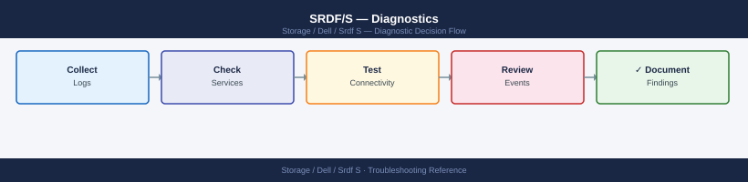

SRDF/S — Diagnostics¶

Before you begin¶
- Access: Solutions Enabler with gatekeeper LUNs to both PowerMax arrays; Unisphere for PowerMax admin access; network team contact for WAN link investigation
- Gather first: the RDFG number, current pair state from
symrdf query, and whether hosts are experiencing write latency or I/O suspension - RTT baseline: establish the normal WAN RTT before an incident so you have a baseline for comparison — document it in your CMDB
- Do not force failover without confirming the link interruption is unresolvable — SRDF/S failover means R1 hosts will lose access to their volumes; it is a disruptive operation
- Logging: collect
symrdf queryoutput immediately when an issue is reported — pair state can change and logs lose context if collected too late
Step 1 — Check SRDF pair state¶
# List all SRDF groups on this array
symrdf -sid <SID> list -rdfg all
# Output: RDFG number, mode (S = Sync), pair count, state, link state
# Detailed pair state for a specific RDFG
symrdf query -sid <SID> -rdfg <rdfg-number>
# Key output columns:
# R1_ST: R1 state — should be "Ready"
# R2_ST: R2 state — should be "Write Disabled"
# R2_PAIR_ST: pair state — should be "Synchronized" or "Consistent"
# LINK_ST: RF link state — should be "Ready"
# MODE: should be "S" (Sync)
# Verbose output including per-device detail
symrdf query -g <group-name> -detail
# Shows each device in the group with its individual pair state
# States and what they mean:
# Synchronized: healthy — R1 and R2 are in lock-step
# Consistent: normal transient — write in transit from R1 to R2
# Partitioned: link interrupted — R2 frozen; data may diverge if sustained
# Suspended: manually paused; R2 frozen at point of suspension
# Failed Over: DR failover is active; R2 is now R/W
$ symrdf -sid 000123456789 list -rdfg all
RDFG Mode Pair_Count State Link_State
1 S 47 Ready Ready
2 S 52 Ready Ready
3 S 48 Ready Ready
$ symrdf query -sid 000123456789 -rdfg 1
Dev_Name R1_ST R2_ST R2_PAIR_ST LINK_ST MODE
dev001 Ready Write Disabled Synchronized Ready S
dev002 Ready Write Disabled Synchronized Ready S
dev003 Ready Write Disabled Consistent Ready S
dev004 Ready Write Disabled Synchronized Ready S
...
$ symrdf query -g PROD_SRDF_GRP1 -detail
Device R1_State R2_State Pair_State Link_State Mode
0001 Ready Write Disabled Synchronized Ready S
0002 Ready Write Disabled Synchronized Ready S
0003 Ready Write Disabled Consistent Ready S
0004 Ready Write Disabled Synchronized Ready S
0005 Ready Write Disabled Synchronized Ready S
Common errors
SYMCLI_ERROR_DB (191): Could not open the database — Verify the Symmetrix array is online and the SID is correct with symcfg list -v.
Error: Invalid RDFG number <rdfg-number> — Confirm the RDFG exists by running symrdf -sid <SID> list -rdfg all first.
Decision flow:
- Synchronized / Consistent but hosts see high latency → measure RTT (Step 2)
- Partitioned → network link between sites was interrupted; fix network first, then symrdf establish to re-sync
- Suspended → check who suspended and why; resume only after confirming data is consistent
- Not Synchronized → RF port or link issue; proceed to Step 4
Step 2 — Measure WAN round-trip time¶
SRDF/S holds every host write until R2 confirms receipt. The WAN RTT is directly added to host write latency.
# Measure RTT between production and DR sites
# Run from a host on the production network that can reach the DR network
ping -c 100 <dr-site-ip>
# Key statistics:
# avg RTT: the baseline latency addition to all host writes
# max RTT: worst-case latency spike
# packet loss: any loss causes SRDF/S to retry; > 0% = link quality issue
# For more detailed latency analysis (on Linux)
mtr --report --report-cycles 100 <dr-site-ip>
# Shows per-hop latency; identifies where latency is being added in the path
# For Windows from the DR site
pathping <production-site-ip> /n 100
PING 10.45.120.8 (10.45.120.8) 56(84) bytes of data.
64 bytes from 10.45.120.8: icmp_seq=1 ttl=62 time=8.34 ms
64 bytes from 10.45.120.8: icmp_seq=2 ttl=62 time=8.41 ms
64 bytes from 10.45.120.8: icmp_seq=3 ttl=62 time=8.29 ms
...
64 bytes from 10.45.120.8: icmp_seq=100 ttl=62 time=8.56 ms
--- 10.45.120.8 statistics ---
100 packets transmitted, 100 received, 0% packet loss, time 9847ms
rtt min/avg/max/stddev = 8.12/8.38/9.87/0.41 ms
My traceroute [v0.93]
prod-host01 (10.20.50.15) Wed Jan 15 14:32:18 2025
Keys: Help Display mode Restart statistics Order of fields quit
Packets Pings
Host Loss% Snt Last Avg Best Wrst StDev
1. 10.20.50.1 0.0% 100 0.45 0.52 0.41 1.23 0.18
2. 172.16.1.254 0.0% 100 2.34 2.41 2.12 3.89 0.34
3. 10.45.120.8 0.0% 100 8.12 8.38 8.01 9.87 0.41
Common errors
ping: unknown host <dr-site-ip> — Replace <dr-site-ip> with the actual DR site IP address (e.g., 10.45.120.8) and verify DNS resolution or network routing.
100% packet loss — Verify the DR site IP is reachable from the production network, check firewall rules allow ICMP, and confirm the network path is active.
mtr: command not found — Install mtr using apt-get install mtr (Debian/Ubuntu) or yum install mtr (RHEL/CentOS), or use traceroute as an alternative.
SRDF/S latency impact: - Maximum recommended RTT is typically 5 ms for SRDF/S (check Dell sizing guide for your use case) - A 5 ms RTT adds 5 ms to every synchronous host write on R1 volumes - RTT > 5 ms: engage the network team to investigate WAN link quality, QoS, or congestion
Step 3 — Check SRDF event log¶
# Show SRDF-specific events from the array event log
symevent list -sid <SID> -type rdf -last 100
# Shows: event time, severity, message (e.g., "SRDF link became not ready", "pair partitioned")
# Export to CSV for the Dell SR
symevent list -sid <SID> -type rdf -last 200 -output csv > /tmp/rdf_events_$(date +%F).csv
# Filter to error-level events only
symevent list -sid <SID> -type rdf -severity error -last 100
# Check Unisphere alert log
# Unisphere for PowerMax → Monitor → Alerts
# Filter to: Category = SRDF; Severity = Warning, Error, Critical
Event ID Time Severity Message
12847 2024-01-15 14:32:18 Warning SRDF link became not ready on director 4e
12851 2024-01-15 14:35:42 Error RDF pair partitioned: RA-8:g0 <-> RA-8:g0
12856 2024-01-15 14:38:05 Critical Synchronization failed on symmetrix 000297123456
12862 2024-01-15 15:01:33 Warning SRDF link recovered on director 4e
12868 2024-01-15 15:15:47 Error RDF cache write pending threshold exceeded
12874 2024-01-15 16:22:11 Critical Remote array unreachable: 000297654321
Events exported to: /tmp/rdf_events_2024-01-15.csv (247 KB, 200 records)
Event ID Time Severity Message
12851 2024-01-15 14:35:42 Error RDF pair partitioned: RA-8:g0 <-> RA-8:g0
12856 2024-01-15 14:38:05 Critical Synchronization failed on symmetrix 000297123456
12868 2024-01-15 15:15:47 Error RDF cache write pending threshold exceeded
12874 2024-01-15 16:22:11 Critical Remote array unreachable: 000297654321
Common errors
Error: Invalid SID <SID> — Replace <SID> with the actual Symmetrix ID (e.g., 000297123456) or use symcfg list -v to verify the correct SID.
Error: No events found matching filter criteria — Expand the time range by increasing -last value or remove the -severity filter to confirm events exist in the log.
Permission denied: /tmp/rdf_events_*.csv — Ensure the Symmetrix user has write permissions to /tmp or redirect output to a writable directory like $HOME.
Step 4 — Check RF director ports and link statistics¶
# List all SRDF director ports on the array
symcfg -sid <SID> list -rdf -v
# Shows: director number, port number, link status, bandwidth
# Detailed RDFG configuration
symcfg -sid <SID> list -rdfg <rdfg-number> -v
# Shows:
# Director: RA director handling this RDFG
# Cycle time: for SRDF/A; not applicable for SRDF/S
# Link speed: should match the provisioned link capacity
# Mode: S (Sync) for SRDF/S
# Collect link performance statistics (samples over 60 seconds)
symstat -sid <SID> -type rdf -delta_t 60
# Key metrics:
# Write Response Time (ms): should equal WAN RTT; spikes = WAN congestion
# Link Utilization (%): > 80% = bandwidth saturation; consider link upgrade
# Throughput (MB/s): compare to link capacity; high = high write workload
Director Port Link Status Bandwidth
--------- ---- ----------- ---------
RA-1e 0 UP 8 Gbps
RA-1e 1 UP 8 Gbps
RA-1f 0 UP 8 Gbps
RA-1f 1 DOWN 8 Gbps
RA-2e 0 UP 16 Gbps
RDFG Configuration Details
Director: RA-1e
Cycle Time: N/A (SRDF/S mode)
Link Speed: 8 Gbps
Mode: S (Synchronous)
Symmetrix ID: 000297900001
Timestamp Write Response Time (ms) Link Utilization (%) Throughput (MB/s)
2024-01-15 14:32:15 45.2 62.1 512.8
2024-01-15 14:33:15 47.8 65.3 528.4
2024-01-15 14:34:15 52.1 71.2 587.6
Common errors
symcfg: Error: Invalid SID <SID> — Replace <SID> with the actual Symmetrix ID (e.g., 000297900001).
symstat: Error: RDF link not configured for this array — Verify SRDF is licensed and configured; check symcfg list -rdf output shows active ports.
Step 5 — Collect diagnostic bundle for Dell SR¶
# Complete SRDF/S diagnostic snapshot
{
echo "=== symrdf list (all RDFGs) ==="
symrdf -sid <SID> list -rdfg all
echo "=== symrdf query (pair state) ==="
symrdf query -sid <SID> -rdfg <rdfg-number>
echo "=== symcfg rdf (RF port state) ==="
symcfg -sid <SID> list -rdf -v
echo "=== symcfg RDFG detail ==="
symcfg -sid <SID> list -rdfg <rdfg-number> -v
echo "=== symevent rdf (last 200 events) ==="
symevent list -sid <SID> -type rdf -last 200
echo "=== symstat rdf performance ==="
symstat -sid <SID> -type rdf -delta_t 60
} > /tmp/srdf-s-diag-$(date +%F-%H%M).txt
# Collect Unisphere logs via GUI
# Unisphere for PowerMax → System → Export Logs
# Select: time range covering the incident window
=== symrdf list (all RDFGs) ===
Symmetrix ID: 000296802151
RDFG# Pair# State Remote SID Remote RDFG# Mode Type
1 1 RDF 000296802152 1 Sync R1
1 2 RDF 000296802152 1 Sync R1
2 1 RDF 000296802153 2 Async ACP_OFF R1
2 2 RDF 000296802153 2 Async ACP_OFF R1
=== symrdf query (pair state) ===
Symmetrix ID: 000296802151
RDFG# Pair# State Hop# Hop_ID Link_Stat RDF_Mode Consistency
1 1 RDF 1 0 OK Sync Consistent
1 2 RDF 1 0 OK Sync Consistent
=== symcfg rdf (RF port state) ===
Symmetrix ID: 000296802151
Director Port Link_ID State Speed Enclosure Type
RF 0 0 ON 8Gbps 1 Fibre
RF 1 1 ON 8Gbps 1 Fibre
RF 2 2 ON 8Gbps 2 Fibre
RF 3 3 OFF 8Gbps 2 Fibre
=== symcfg RDFG detail ===
Symmetrix ID: 000296802151
RDFG# Pair# State R1_Dev R2_Dev R2_SID Mode Consistency
1 1 RDF 0001 0001 000296802152 Sync Consistent
1 2 RDF 0002 0002 000296802152 Sync Consistent
=== symevent rdf (last 200 events) ===
Timestamp Severity Event_ID Message
2024-01-15 14:32:18 WARNING 0x0A1234 RDFG 1 Pair 1: Link degraded, speed reduced to 4Gbps
2024-01-15 13:47:02 INFO 0x0A5678 RDFG 2 Pair 1: Consistency restored
2024-01-15 12:15:44 ERROR 0x0A9ABC RDFG 1 Pair 2: RDF link down on RF port 1
=== symstat rdf performance ===
Symmetrix ID: 000296802151
RDFG# Pair# Write_Pending Consistency_Lag Latency_ms Throughput_MB
1 1 0 0 2.3 145.2
1 2 0 0 2.1 142.8
2 1 245 1250ms 45.7 12.4
2 2 0 0 2.2 138.5
Diagnostic snapshot saved to: /tmp/srdf-s-diag-2024-01-15-1432.txt
Common errors
symrdf: Cannot open Symmetrix <SID>
See also¶
Verify resolution¶
symrdf query -sid <SID> -rdfg <rdfg-number>showsR2_PAIR_ST=Synchronized,LINK_ST=Ready- WAN RTT is within acceptable bounds (typically ≤ 5 ms); host write latency has returned to baseline
symevent list -type rdfshows no new error events in the last 15 minutessymstat -type rdfshows Write Response Time back to expected value- Monitor host application performance for 30 minutes after the fix to confirm write latency is stable